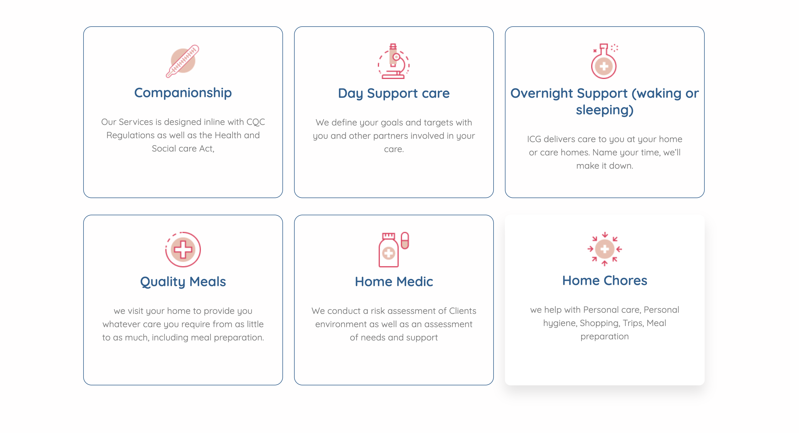

Ideal Caregivers
Here's a unique gem among my projects – a WordPress masterpiece brought
to life with the magic of Elementor.
This website isn't your typical run-of-the-mill; it's a carefully
crafted symphony of smooth animations, elevating the user experience to
a whole new level.
I didn't stop there; custom CSS was skillfully woven into the template
to tailor it precisely to the client's vision. And of course, no
WordPress site is complete without its arsenal of plugins, fine-tuned to
perfection, ensuring top-notch optimization.
Technologies:
- - WordPress CMS
- - PHP
- - CSS3
- - Xampp
- - Plugin integration